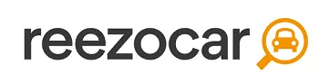
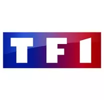
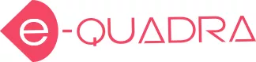
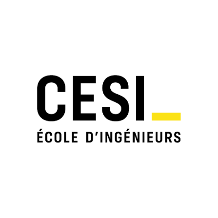

DEVOPS
Passionné d'informatique depuis l'adolescence, j'ai commencé mon parcours en tant que technicien de maintenance pour devenir aujourd'hui Lead DevOps. Je me suis spécialisé dans plusieurs domaines tel que l'open-source, le cloud et l'automatisation à travers différents groupes ou bien start-up. Curieux depuis toujours, je cherche constamment à me perfectionner pour être en phase avec les besoins SI des entreprises.
Parcours
Colissimo
01/2021 - Aujourd'hui - DevOps - TechLead depuis 01/2025Colissimo est le service de livraison de colis aux particuliers de La Poste, l'entreprise postale française. Colissimo propose des emballages prêts à expédier et des étiquettes prépayées en sus des affranchissements classiques aux guichets, automates, et sur Internet.

Reezocar
12/2018 - 01/2021 - TechLead DevOpsCréée en juin 2013, la start-up Reezocar entend bien devenir l'un des leaders européens de la vente de véhicules d'occasion en ligne et lance aujourd'hui son site Web.

TF1 SA
09/2016 - 12/2018 - Architecte cloud et open sourceLe Groupe TF1 est un groupe de médias français créé le 6 avril 1987 lors de la privatisation de la chaîne de télévision TF1 lancée le 6 janvier 1975. Son principal actionnaire est le groupe industriel français Bouygues.
Metronews
08/2013 - 09/2016 - Ingénieur systèmes réseauxMetro, devenu Metronews en 2013, était un média d'information français fondé en 2002 et disparu en 2016. À l'origine version française imprimée du journal international d'information gratuit Metro, le quotidien papier est publié du 18 février 2002 au 3 juillet 2015, date à laquelle il devient un pure player — un média actif uniquement sur Internet — sous le nom de Metronews.

E-Quadra
10/2011 - 08/2013 - Ingénieur systèmes réseauxe-Quadra, ESN forte de 20 ans d'expérience dans le domaine Informatique vous propose de rejoindre ses équipes pour relever les défis techniques de ses clients dans le cadre de missions d'Assistance Technique.
Compétences
Virtualisation / Cloud / Containerisation
- VMware ESX/ESXI
- Kubernetes / Docker / Rancher
- Azure
- AWS
- [Perso] Digitalocean
Sécurité et Supervision
- ePolicy Orchestrator
- Windows Server Update Services
- Microsoft Baseline Security Analyzer
- QualysGuard, ClamAV, Rkhunter
- Nagios, Zabbix, Prometheus, Grafana
DevOps
- Best practices OPS & Open Source
- Infra as Code (IaC)
- Orchestration configurations & micro-services
- WebPerf & SEO
Gestion de Projet
- Cahier des charges & Analyse SI
- Management d'équipe
- Méthodes Agiles
Programmation / DBA
- Shell script
- Python
- MySQL
- [Perso] PHP / HTML
- [Perso] SQLite
Administration
- Sysadmin Linux/Unix & Windows Server
- Gsuite
- Jenkins
- [Perso] Ansible
Versionning
- GitHub
- [Perso] GitLab CI/CD
Robotique (Personnel)
- ESP32 / ESP8266
- Display I2C
- DHT11 & DS18B20
- L298N & HC-SR501 PIR
Formation et Diplômes

CESI Alternance
2009 / 2011 - Formation RIR (RNCP Niv2)Responsable en Ingénierie Réseaux
CESI Alternance
2007 / 2009 - Formation TSMSI (RNCP Niv3)Technicien Supérieur en Maintenance et Supports Informatiques